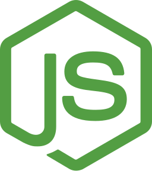

Projects (title goes to live app, link goes to repo...)
Local Events
http://github.com/joshuaakanetuk/local-events
Host your organizations events of Facebook and control your data.
- 

Resouvenir
Log and track all of your movies you watch and create pretty watchlists.
soloq
Soon
Make it easier to edit after-the-fact with a tool suite for highlighting data in realtime.
HAL 5000
Soon
Automated video creation suite for solo Twitch streamers to create content for other platforms.
Biography
üë®üèø‚Äçüíª Hi, I am Joshua Akan-Etuk! I am a software developer + filmmaker living close to Richmond,
Virginia.
What makes me different from most is my passions outside of coding and how that drives programming. I love art. I would argue my artist interests drive my interest in coding.
For example, I'm working on an app to customize brand content for gamers. It has made me get comfortable with Node.JS, networking, and bootstrapping.
Another app I'm working on is a movie diary clone based on the MVP of Letterboxd. I like having ownership over my data, but Letterboxd's API isn't publicily available currently. So, I will be creating a self-hosted app for the API Hack project.
What I feel like makes me stand out is how my need to express myself or solve issues has guided my programming so far.
üè¢üë©üèΩ‚Äçüíªüë®üèø‚ÄçüíªI love working with others and wouldn‚Äôt be able to get anywhere programming without working with other talented people in someway. Imagine with world without the thousands of mission critial open source projects. I imagine making programs people need. However, one mind is not enough for sustaining applications that people reply on. That's why I want to be on a team. I also learn faster in an team environment of people more talented than me.
I would consider myself patient, modest, and creative. Outside of code I make videos for Youtube, stream on Twitch, and write music (for myself).
I provide the following services:
- Full Stack Apps
- Python Scripting
- Soon Machine Learning